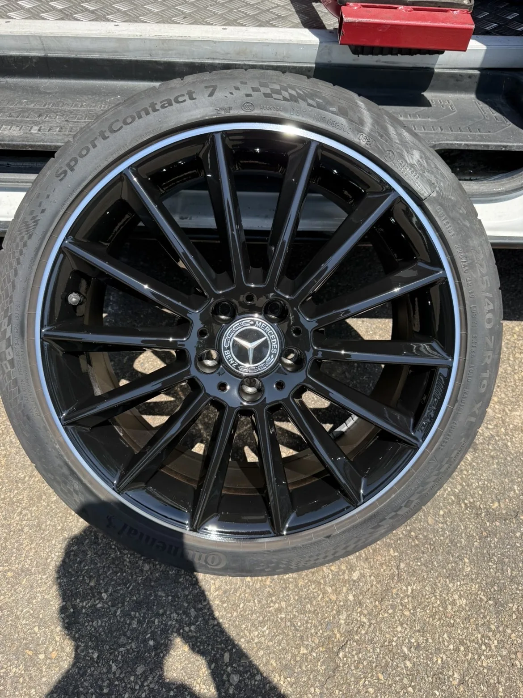

Finition premium
Le poli diamant offre l'un des rendus les plus élégants du marché — mais c'est aussi la finition la plus fragile face au sel et aux lavages. Vernis qui cloque, points blancs, aspect terni : on répare cette finition spécifique, par ré-usinage ou reprise en peinture selon l'état réel de vos jantes.

Pourquoi cette finition s'abîme plus vite. Le poli diamant expose une fine couche d'aluminium brut, protégée uniquement par un vernis. Dès que ce vernis se fissure — sel de déneigement, lavage haute pression trop proche, produit trop agressif — l'aluminium s'oxyde et blanchit. C'est une contrepartie connue de cet aspect miroir très recherché, pas un défaut de fabrication.
Deux méthodes
Selon l'état de la face usinée et le nombre de fois où la jante a déjà été reprise, on retient l'une des deux méthodes suivantes — on vous dit laquelle avant toute intervention.
On retire une fine couche d'aluminium pour retrouver la face brillante d'origine — la méthode la plus fidèle au rendu constructeur, à condition que la jante n'ait pas déjà été usinée plusieurs fois.
La zone oxydée est neutralisée avant toute reprise, pour éviter que la corrosion ne progresse sous la nouvelle protection.
Si le ré-usinage n'est plus possible, une base effet aluminium reproduit le rendu miroir sans usinage supplémentaire.
Un vernis bi-composant referme la finition et retarde la prochaine oxydation, quelle que soit la méthode retenue.
Ce qu'on répare
Oxydation localisée sous le vernis — le signe le plus fréquent d'une finition diamantée qui commence à souffrir.
Le vernis se décolle par plaques, exposant l'aluminium brut à une oxydation accélérée s'il n'est pas traité rapidement.
Un frottement de trottoir marque immédiatement la face miroir — plus visible que sur une finition mate ou brillante classique.
Un vernis vieillissant perd sa transparence et jaunit progressivement — la jante perd son éclat d'origine.
Autre besoin
Si vos jantes ne sont pas encore diamantées et que vous souhaitez passer à cette finition, direction notre page personnalisation — le poli diamant y est l'une des options proposées, aux côtés du bi-ton et des couleurs sur-mesure.
Envoyez-nous des photos — diagnostic gratuit et réponse sous 24h.